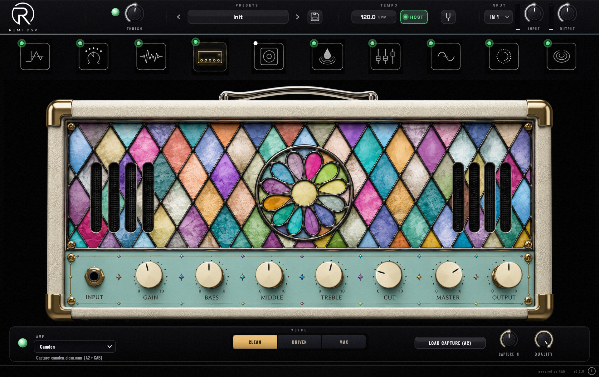

REMI DSP · PROFESSIONAL PLUGINS
Pro plugins. Early access.
A neural guitar rig, a vocal double aligner, a dynamic resonance suppressor, a note-based vocal editor and an honest mastering analyzer — five professional plugins for Windows and macOS, free while in early access. No account required.
EARLY ACCESS · NO ACCOUNT REQUIRED
THE PLUGINS
Five tools. One studio.
Every one is the full version — every amp, every verdict, every band, every note. Pick one, or take all five.